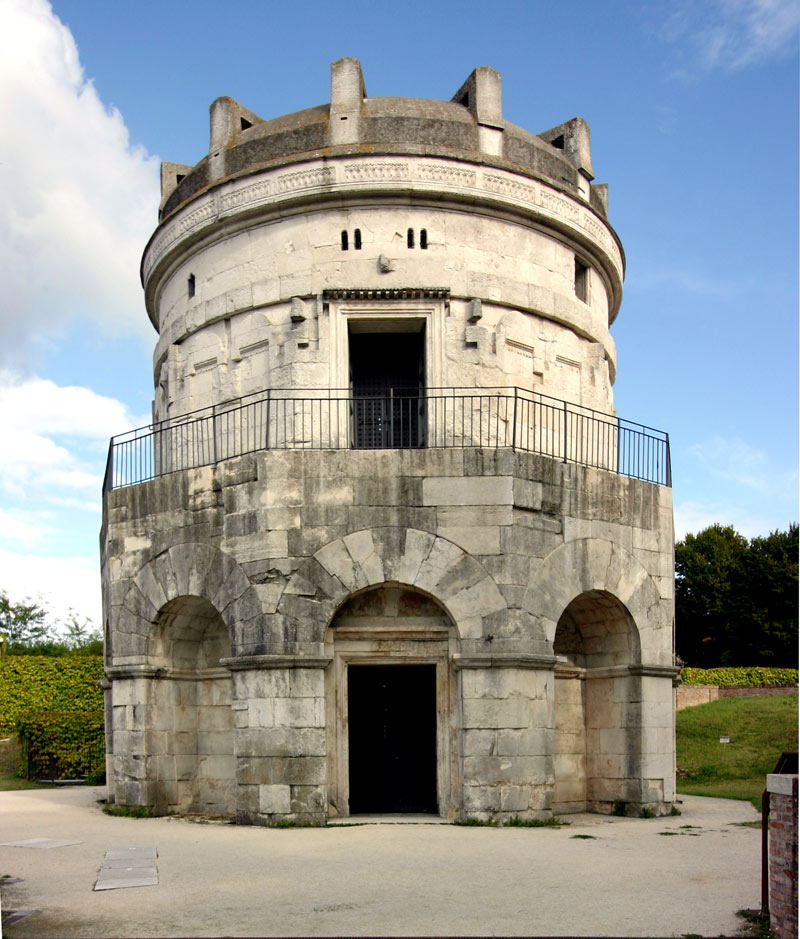

Архитектура раннего Средневековья
Общепринятая отправная точка эпохи Средних веков — это, как известно, дата падения Римской империи в 476 году. Однако для строителей нового мира Римская империя всё ещё существовала. Речь идёт не совсем о её восточной части, а, скорее, о политическом и культурном влиянии империи. Первые правители варварских королевств активно копировали образы и атрибуты верховной власти Рима: вспомнить хотя бы Хлодвига и Теодориха Великого.

Архитектура того времени в данном случае не была исключением: остатки имперского величия использовались германцами. Ярчайший тому пример — мавзолей Теодориха Великого в Равенне, построенный в 520 году.